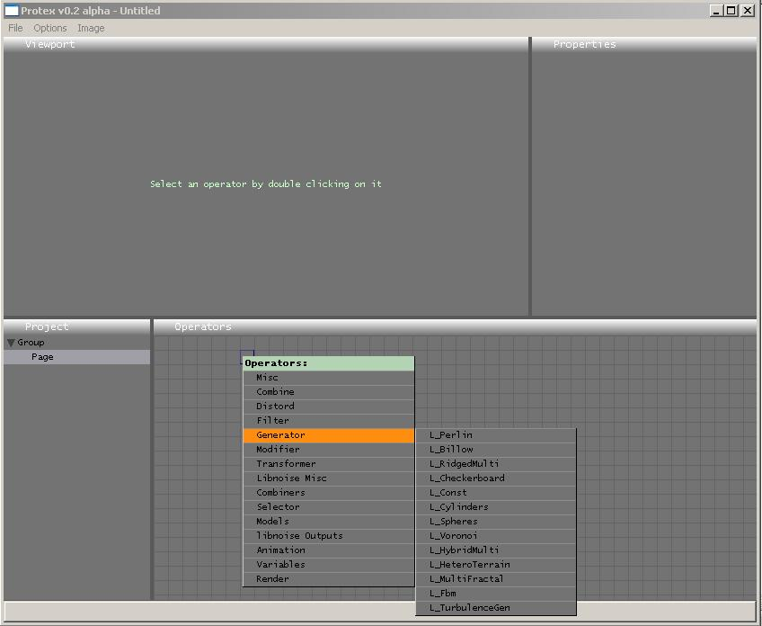
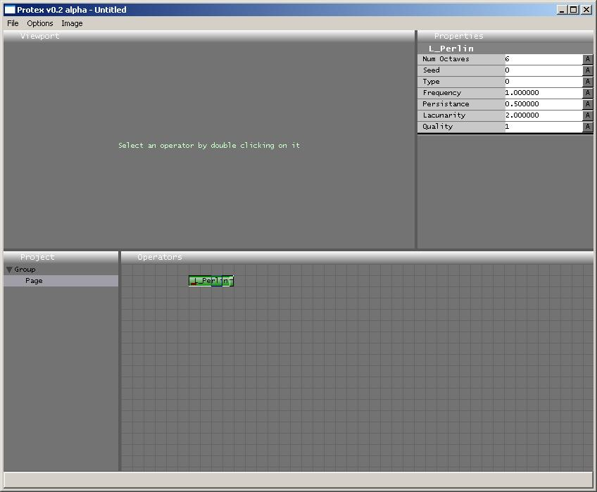
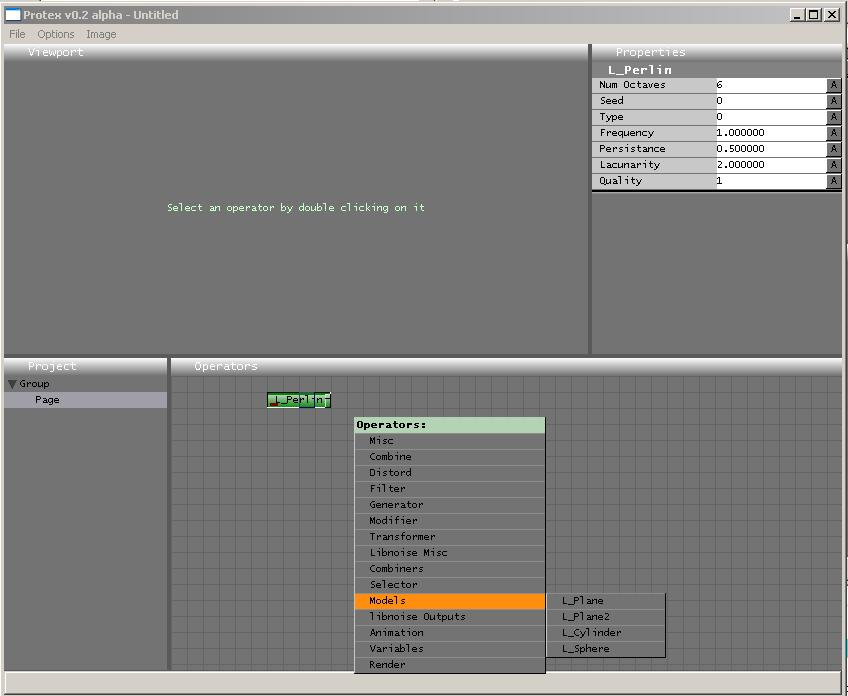
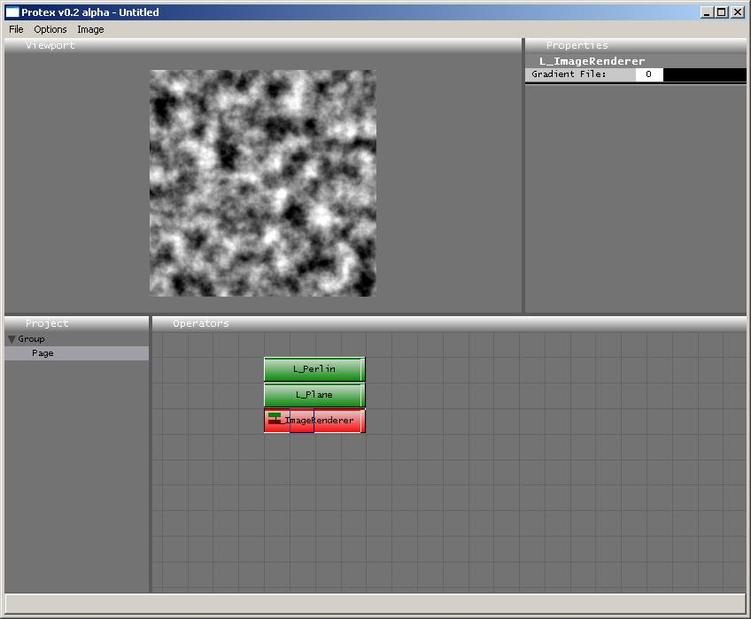
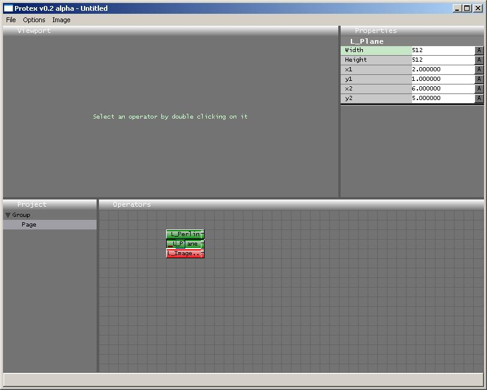
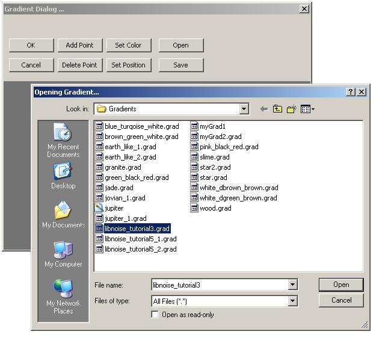
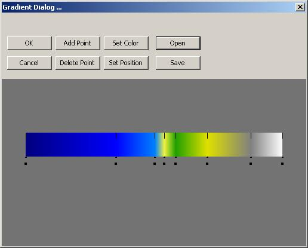

This is the first tutorial in a series that will show a user how to use ProTex to create textures that incorporate libnoise. The readers should first acquaint themselves with the FxGen tutorials, and also the libnoise tutorials.
This tutorial will take the user through the basic steps required to recreate libnoise tutorial 3 in ProTex.
Part 1 – your first project
To start with, open ProTex and right click in the 'Operators' viewport. A popup menu should appear. Navigate to the 'Generator' entry to access the libnoise Generator routines and select L_Perlin as shown in the picture.

Now single-click on the L_Perlin box that appears in the 'Operators' viewport. This should bring up the properties of the Perlin noise module shown in the 'Properties' viewport. Keep the values as default for the moment.

Part 2 – Rendering the Noise
In order to render the noise to a texture, libnoise requires the use of a Noisemap builder. This is because the noise is an abstract concept, not an image. The Noisemap builder will calculate the values of the noise for the respective points on the image. ProTex has several Noisemap builder types. These types are listed under 'Models' in the 'Operators' window popup menu.

ProTex also requires the use of a 'L_ImageRenderer' object to output the picture to the screen. Quickly add the 'L_Plane' object and the 'L_ImageRenderer' object to the positions as shown below, and double-click the L_ImageRenderer to produce the output. ProTex may take a couple of seconds to generate the noisemap.

The next step in fixing this image is to set the bounds of the L_Plane object. Single click on the L_Plane block to bring up the properties in the Properties viewport. Set the values as show in the diagram below, to correspond with the values set in the libnoise tutorial.

Be careful not to confuse the x2 and y1 variables, to avoid bugs. (This should be fixed in a later version).
Part 3 – Changing the Gradient
Now we can make this a bit more interesting by adding colors to the picture. Single click on the L_ImageRenderer object to show its properties in the Properties viewport. Now double-click on the black box next to the 'Gradient File' property. This should bring up the gradient dialog as shown below.
It is a perfectly simple process to add points and set the correct colors. I have already prepared a version of the gradient from libnoise tutorial 3. In order to load it, select the 'Open' button and navigate to the 'Gradients' directory.

Select the file named libnoise_tutorial3.grad and press the 'Open' button. The Gradient Dialog should now appear as shown below. It is always a good idea to save gradients as often as possible, as they are very useful.

Clicking 'Ok' on the gradient dialog should now present you with the scene shown below:-

I know its not pretty, however the reader should be able to play about with the noise parameters to get the same appearance as the output from libnoise tutorial 3, as shown in the dialgram. This is the first step to becoming a proficient user of ProTex!